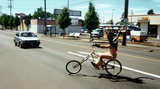
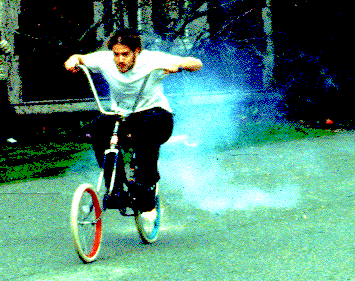
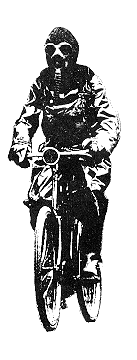
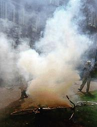
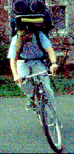

Chunk Crowd Control Techniques. |

|
As we travel the fallout-strewn Forbidden Zone, the Chunk fleet must make use of extensive measures to ensure its safety from the hordes of mutants which inhabit the radiation jungles and scorched wastelands.
It also must be said that there is one field in which the fleet finds that engine-powered vehicles have an advantage, namely, in the ability to produce annoying noises and poisonous vapors.
|  |  | |
| We solve both problems at once with the use of bicycle-mounted explosives. | ||
|  |  | |
| Fume dispensers are better suited for clearing an area than for hiding one's location, as this unfortunate pilot learned. | When traveling through civilized areas, more specific sonic disruptors are in order. | |
|
That's the brute-force approach, anyway. It works, and it's fun, but when taking over the street is the goal, a better method is to just plop down and have a party. The machines of death are no match for the affirmation of life which is rock and roll. |
(Return to C.H.U.N.K. Technical Documentation)
| Copyright 2003 Megulon Five <megulon5@dclxvi.org>. |
|
This work is licensed under a Creative Commons License. | Last modified 12 September 1999. |